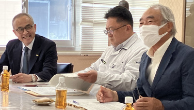
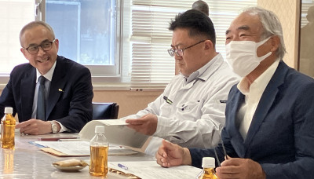
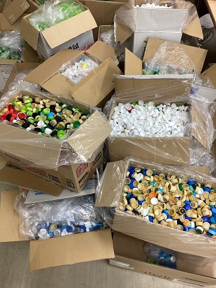
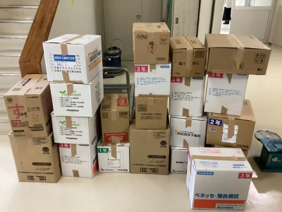
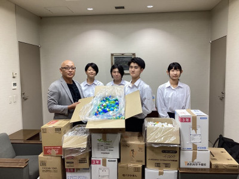

日誌
鳥取東高の今と未来を熱く語りあう ～第２回学校運営協議会開催～
2023年10月26日 14時51分10月26日（木）午前，宮本委員長をはじめとする５名の委員の皆様にお集まりいただき，本年度第２回となる学校運営協議会を開催しました。
 
祝 中国選抜大会出場！ ～空手道・女子形～
2023年10月26日 13時59分10月21日（土），県立武道館（米子市）にて令和５年度中国高等学校空手道選抜大会鳥取県予選会が開催されました。この大会に，本校１年生 藤縄さんが出場しました。
東高１年生，「病気」について考える ～病気に関する教育～
2023年10月19日 15時23分10月18日（水），鳥取市立病院医師 懸樋 英一 氏を講師としてお迎えし，１年生を対象に，日本人の２人に１人がにかかる可能性があると言われている「がん」についてお話ししていただきました。
社会に出るにあたって考えておきたいこと ～性に関する指導（３年生）～
2023年10月12日 08時45分10月11日（火），鳥取県警東部少年サポートセンターの方を講師にお迎えし，「社会に出るみなさんに今伝えたいこと」と題して性被害防止に関する講演をしていただきました。
「あなたの出すごみはどうなる？」（１年生環境講演会）
2023年10月12日 08時09分10月11日（火），鳥取県東部環境クリーンセンターの方を講師にお迎えし，環境問題について考えました。
演題は「あなたの出すごみはどうなる？」。家庭ごみの分類や出し方，ごみミの処分方法などについて講演していただきました。
ペットボトルキャップを寄贈しました
2023年10月10日 16時07分10月5日（木），東高祭の学年企画として１年生が作成した「キャップアート」で集まったペットボトルキャップを寄贈してきました。
各クラスのキャップアート責任者と生徒会執行部が呼びかけて集まったキャップは，なんと！，必要数の14,000個をはるかに超え，段ボール21箱分にもなりました。


１番手前の箱には５kg弱のキャップが詰まっています。（キャップ２kgがワクチン１本分に相当するそうです）
これらを，「小さな親切」運動でエコキャップ収集運動に取り組んでおられる山陰合同銀行鳥取営業部に届けてきました。

写真は鳥取営業部長の石橋さんと本校のキャップアート責任者並びに生徒会執行部員です。
「ペットボトルキャップアート」の取組をとおして，「ゴミの減量」という学校祭の課題と「小さな命を守る」という社会課題の解決に微力ながら貢献できたのではないかと思います。
研修旅行・北海道（最終日）＃４
2023年10月6日 14時55分楽しかった研修旅行もいよいよ終盤。
研修旅行・屋久島（最終日）＃１
2023年10月6日 12時40分屋久島も最終日を迎えました。最後の研修、白谷雲水峡です。
研修旅行・北海道（最終日）＃３
2023年10月6日 11時17分4〜6組は最後の研修先、白い恋人パークへ。メルヘンの世界に触れ、しばし童心に帰って楽しいひとときを過ごしていました。 女子より男子の方が楽しんでいるかも⁈